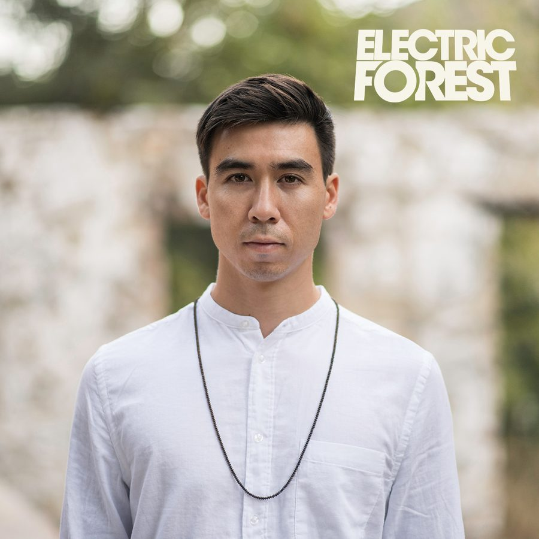

Rinzen Unveils His Transcendent Electric Forest 2018 Playlist


L.A. fast-riser Rinzen is the latest to join the mau5trap stable, overseen and mentored by the mighty deadmau5 himself. And not unlike many of the producers who call the label home (ATTLAS, REZZ, Monstergetdown, and Matt Lange counting among them), he’s got some rather large ambitions that go beyond just producing straightforward tracks for the dancefloor. We already put the spotlight on him via our 5 Must-See Artists list for the festival this year, but we’re now ready to dive a little deeper into one of the scene’s most exciting new names.
The Rinzen sound is situated rather evocatively between celluloid-inspired soundscapes, majestic progressive house, and more cerebral techno styles. And while he might just be getting started, his rather “cinematic” ambitions are already well on display. He kicked things off with his debut Forbidden City EP on mau5trap last year, and he’s just followed it up recently with the new Exoplanet EP, which he’s rather ambitiously described as his attempt to explore “what great mysteries lie in the cosmos.”
So, what’s the bigger story behind Rinzen and his journey as a producer, beyond these initial high-profile EPs? We grabbed him for a chat in the lead-up to Electric Forest.
It certainly seems the past year has been action-packed for you as a producer who’s on the rise. How has it all been going?
It’s been surreal, man. It feels very rewarding to see the long hours I’ve put in the studio over the past few years starting to pay off. Some great things have happened, but it’s also stressful at times. It’s easy to fall into the mindset of “what’s next?” I think, especially in these early days, it’s easy to get impatient and want everything to happen right away. I’m constantly reminding myself not to rush the process—great visions take time to achieve.
What’s the bigger picture behind your journey as a producer?
I like to think about myself not just as a music maker, but also as a creator and storyteller. For me, Rinzen is about bringing the narrative and world-building elements of cinema and literature together with electronic music. These early concept EPs are just the beginning of these ideas. I want to make these worlds [become] larger and even more tangible in the future.
Tell us a little about what goes into your creative process.
I always try to approach the studio with an open mindset, but I think my influences inevitably end up shining through. I like drawing inspiration from guys like Maceo Plex or Recondite—or Hans Zimmer and John Williams, on the film side of things. I’m ultimately trying to create music evoking these larger cinematic tropes, while still being firmly rooted in the house and techno world.
You’ve said your new Exoplanet EP is your attempt to explore “what great mysteries lie in the cosmos.” Tell us more about these concepts you’re tapping into.
I’ve always enjoyed music that is attached to a very specific concept. When you think about our favorite movies and books, they all have very distinct worlds and themes. I like to present my music in the same way. It’s this whole other side of creativity apart from the actual act of music making. You get to design a world and then tell a story within it. That’s very exciting to me.
Finally, what inspired the playlist you’ve put together here for Electric Forest?
I love tracks that lean toward the transcendent—tracks that seem to yearn for some greater sense of truth or destiny. It’s this beautiful mix of poignancy, awe, and triumph when done right. These are the tracks I like to play, as well as the tracks I like to create. More specifically, I’ve chosen to highlight some of my favorite tracks of the moment, as well as some of my own creations, which I’ll be playing at Electric Forest.
Rinzen plays the second weekend (June 28–July 1) of Electric Forest, taking place at Double JJ Resort in Rothbury, MI. Wristbands and lodging packages for both weekends are available now. For more information, visit the official website.
Electric Forest is produced by Madison House Presents and Insomniac.
Follow Electric Forest on Facebook | Twitter | Instagram | YouTube
Follow Insomniac Events on Facebook | Twitter | Instagram | SoundCloud | YouTube | Spotify